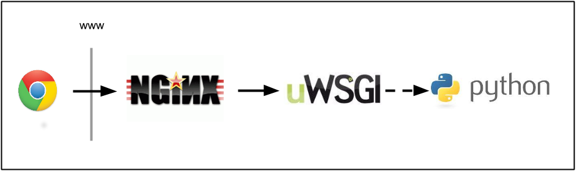
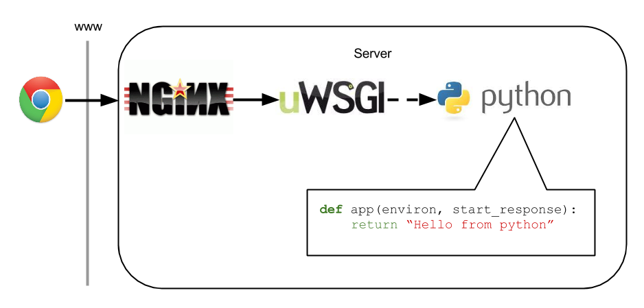

Maximum Throughput
(Baseline costs of web frameworks)
Brian McDonnell, CTO at PageFair.com
- Twitter: @mcdonnellb
- Github: github.com/brianmcdonnell
Typical Production Stack
Minimum WSGI Implementation

Add a Framework to the Mix
What's the cost before it hits your code?

What's the cost before it hits your code?
What computation is occurring??

Anyone with high-frequency, low computation requests
- Analytics (e.g. PageFair)
- Tracking pixels
- Real-time geo-positioning data
Why use a framework?
Why not?
- Framework should support you when you need it
- And get out of the way when you don't

Measuring Throughput
- Use weighttp to offer load to the server
- Throughput asymptotes (or worse) at resource exhaustion
- CPU
- IO
- Memory
Setup 2 AWS Small Instances
and watch them fight...
to exhaustion
Disable non-essential services
- Disable per-request logging
- Disable any debug modes
- Stop all unrequired services (munin, cron jobs)
Lots of requests, sockets, file handles
- Increase file handles
- Increase listen backlogs
- Increase somaxconn & tcp_max_syn_backlog
File Handles
/etc/security/limits.conf
* hard nofile 131072
* soft nofile 65536
In terminal for current session
$ ulimit -Hn 131072
$ ulimit -Sn 65536
Socket Backlog
/etc/sysctl.conf
net.core.somaxconn = 8191
net.ipv4.tcp_max_syn_backlog = 8191
In terminal for current session
sudo sysctl -w net.core.somaxconn=8191
sudo sysctl -w net.ipv4.tcp_max_syn_backlog=8191
Verify changes
$ cat /proc/sys/fs/file-max
$ ulimit -Hn
$ ulimit -Sn
$ cat /proc/sys/net/ipv4/tcp_max_syn_backlog
$ cat /proc/sys/net/core/somaxconn
Nginx Config
worker_processes 1;
events {
worker_connections 8191;
}
server {
listen 80 backlog=8191;
server_name server.pycon.ie;
location /hello {
return 200 'Hello from nginx';
}
}
uWSGI Listen Backlog
app-specific xml config
0.0.0.0:20000
1
1
8191
Using Weighttp
$ weighttp -k -c 1 -n 1000 http://server.pycon.ie/hello
- Ramp up concurrency
$ weighttp -k -c 2 -n 1000 http://server.pycon.ie/hello
...
$ weighttp -k -c 4 -n 2000 http://server.pycon.ie/hello
...
$ weighttp -k -c 8 -n 4000 http://server.pycon.ie/hello
... etc...
First Test
Weighttp---|--->Nginx
- 2 AWS Small Instances
- Same Availability Zone
Add diagram showing both machines (ping-pong background)
Weighttp Vs Nginx
| Weighttp | Nginx | |
|---|---|---|
| Language | C | C |
| Concurrency Model | Single-threaded, evented | Single-threaded, evented |
| Supports | Reduced HTTP | Full HTTP |
Let's try it!
SSH to AWS
Feck
No internet connectivity
Concurrency=1 (Sequential Requests)
$ weighttp -k -c 1 -n 1000 http://server.pycon.ie/hello
Concurrency=2
Show screen shot of two htops
Concurrency=4
Show screen shot of two htops
Concurrency=8
Show screen shot of two htops
Results
Weighttp---|--->Nginx
| rig concurrency | q/s | rig cpu | test cpu |
|---|---|---|---|
| 1 | 250 | 1% | 7% |
| 2 | 1500 | 2% | 22% |
| 4 | 2000 | 4% | 65% |
| 8 | 2500 | 7% | 99% |
Results
Weighttp---|--->Nginx
Show graph of results
Nginx Work
User vs System
| IO | Computation | ||
|---|---|---|---|
| User | System | ||
| TCP Cxn Open | syn-ack, ack | accept | |
| Read request | recv data | read | |
| Parse request | - | string parsing | |
| Match request(nginx.conf) | - | rule matching | |
| Write response | send data | send | |
| TCP Cxn close | fin, fin-ack | close | |
Ultimate Test
Weighttp---|--->Nginx/UWsgi/Python Web Framework
Add diagram showing configurations
Throughput Vs Performance
- Assuming CPU-bound
- ↓computational-cost == ↑throughput
- ↓io-time =/= ↑throughput
- Time-per-request can be poor, while throughput is great
Heads Up
reveal.js is a framework for easily creating beautiful presentations using HTML. You'll need a browser with support for CSS 3D transforms to see it in its full glory.
Vertical Slides
Slides can be nested inside of other slides, try pressing down.
Basement Level 1
Press down or up to navigate.
Basement Level 2
Cornify

Basement Level 3
That's it, time to go back up.
Transition Styles
You can select from different transitions, like:
Cube -
Page -
Concave -
Zoom -
Linear -
Fade -
None -
Default
Themes
Reveal.js comes with a few themes built in:
Sky -
Beige -
Simple -
Serif -
Night -
Default
* Theme demos are loaded after the presentation which leads to flicker. In production you should load your theme in the <head> using a <link>.
Global State
Set data-state="something" on a slide and "something"
will be added as a class to the document element when the slide is open. This lets you
apply broader style changes, like switching the background.
Custom Events
Additionally custom events can be triggered on a per slide basis by binding to the data-state name.
Reveal.addEventListener( 'customevent', function() {
console.log( '"customevent" has fired' );
} );
Slide Backgrounds
Set data-background="#007777" on a slide to change the full page background to the given color. All CSS color formats are supported.
Image Backgrounds
<section data-background="image.png">Repeated Image Backgrounds
<section data-background="image.png" data-background-repeat="repeat" data-background-size="100px">Background Transitions
Pass reveal.js the backgroundTransition: 'slide' config argument to make backgrounds slide rather than fade.
Background Transition Override
You can override background transitions per slide by using data-background-transition="slide".
Clever Quotes
These guys come in two forms, inline:
“The nice thing about standards is that there are so many to choose from”
and block:
“For years there has been a theory that millions of monkeys typing at random on millions of typewriters would reproduce the entire works of Shakespeare. The Internet has proven this theory to be untrue.”
Pretty Code
function linkify( selector ) {
if( supports3DTransforms ) {
var nodes = document.querySelectorAll( selector );
for( var i = 0, len = nodes.length; i < len; i++ ) {
var node = nodes[i];
if( !node.className ) ) {
node.className += ' roll';
}
};
}
}
Courtesy of highlight.js.
Intergalactic Interconnections
You can link between slides internally, like this.
Fragmented Views
Hit the next arrow...
... to step through ...
any type- of view
- fragments
Fragment Styles
There's a few styles of fragments, like:
grow
shrink
roll-in
fade-out
highlight-red
highlight-green
highlight-blue
Spectacular image!